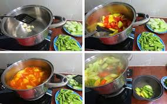

- Add 750ml of water to a pot and bring it to a boil, then add the fish and parboil for a few minutes.
- Add 1 packet of Knorr Canh Chua (Sour Soup) seasoning to the pot, stirring well until the seasoning is completely dissolved.
- Finally, pour out the hot water and switch to pouring cold water over the boiled eggs until they are completely cool.
